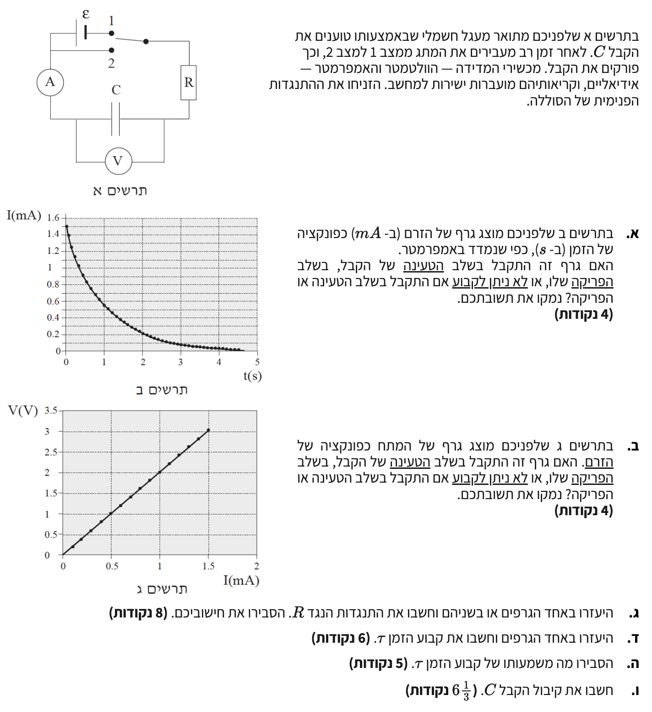

פתרון בגרות בחשמל 2005 - שאלה 3
מבט כללי על השאלה
בשאלת מעגלי זרם ישר וקבלים זו, אנו חוקרים מעגל \(RC\) שבו ניתן לטעון קבל דרך מקור מתח (מצב 1 של המתג) ולאחר מכן לפרוק אותו דרך נגד (מצב 2).
השאלה בוחנת את הבנת התהליכים הפיזיקליים של טעינה ופריקה דרך ניתוח שני גרפים המבוססים על קריאות מכשירי מדידה אידיאליים: גרף של זרם כפונקציה של זמן \(I(t)\) וגרף של מתח הקבל כפונקציה של הזרם \(V(I)\).
במהלך הפתרון נסתמך באופן מדויק על הנוסחאות המופיעות בדף הנוסחאות הרשמי, ונלמד כיצד לחלץ את התנגדות הנגד \(R\), קבוע הזמן \(\tau\) וקיבול הקבל \(C\).

סעיף א
- תרשים ב מציג גרף עוצמת זרם \(I\ \text{(mA)}\) כפונקציה של זמן \(t\ \text{(s)}\).
- הזרם מתחיל מערך מרבי של \(1.5\ \text{mA}\) ודועך מעריכית לכיוון האפס.
לקבוע האם גרף ב התקבל בשלב הטעינה, בשלב הפריקה, או שאי אפשר לקבוע.
1. מעגל שקול - שלב הטעינה (מתג במצב 1)
![]()
בטעינה: המקור \(\varepsilon\) מחובר, זרם זורם לטעינת לוחות הקבל עד לטעינה מלאה.
2. מעגל שקול - שלב הפריקה (מתג במצב 2)
בפריקה: המקור מנותק, הקבל מתפקד כמקור מתח ונפרק דרך הנגד בלולאה סגורה.
במעגל \(RC\), הן בשלב הטעינה והן בשלב הפריקה, עוצמת הזרם במעגל דועכת מעריכית מזרם התחלתי מרבי \(I_0\) לערך של אפס לפי הנוסחה המופיעה בדף הנוסחאות: \[ i(t) = I_0 e^{-t/RC} \]
כפי שניתן לראות בשני התרשימים השקולים לעיל, ההבדל הפיזיקלי היחיד בין שני התהליכים הוא כיוון הזרם בלולאה. מכיוון שמכשיר המדידה מציג את גודל הזרם בלבד (ערך חיובי), הגרף המתקבל של עוצמת הזרם כפונקציה של הזמן \(I(t)\) זהה לחלוטין בצורתו בשני המקרים.
סעיף ב
- תרשים ג מציג גרף של המתח על הקבל \(V\ \text{(V)}\) כפונקציה של הזרם \(I\ \text{(mA)}\).
- הגרף הוא קו ישר העובר בראשית הצירים \((0,0)\): כאשר הזרם הוא \(0\), המתח הוא \(0\); וכאשר הזרם גדל, המתח גדל בהתאמה.
לקבוע האם גרף ג התקבל בשלב הטעינה או בשלב הפריקה, בליווי נימוק המבוסס על נוסחאות דף הנוסחאות.
נבחן את הקשר בין מתח הקבל \(V_C(t)\) לזרם \(i(t)\) בשני השלבים תוך שימוש ישיר בנוסחאות מדף הנוסחאות:
- בשלב הפריקה: בדף הנוסחאות מופיעות הנוסחאות למתח ולזרם בפריקת קבל: \[ V_C(t) = V_0 e^{-t/RC} \] \[ i(t) = I_0 e^{-t/RC} \] ברגע ההתחלתי של הפריקה (\(t=0\)), הקבל והנגד מחוברים בלולאה סגורה בודדת (ללא מקור מתח), ולכן לפי חוק המעגל של קירכהוף מתח הקבל שווה למתח הנגד: \(V_0 = I_0 R\). אם נבודד את הגורם המעריכי \(e^{-t/RC} = \frac{i(t)}{I_0}\) ונציב במשוואת המתח, נקבל: \[ V_C(t) = V_0 \cdot \frac{i(t)}{I_0} = (I_0 R) \cdot \frac{i(t)}{I_0} = i(t) \cdot R \] זהו קשר של פרופורציה ישרה (קו ישר) בין המתח על הקבל לזרם, העובר בראשית הצירים \((0,0)\) – כפי שמוצג בדיוק בתרשים ג!
- בשלב הטעינה: בדף הנוסחאות מופיעה הנוסחה למתח רגעי בטעינת קבל: \[ V_C(t) = \varepsilon\left(1-e^{-t/RC}\right) \] אם נציב את הגורם המעריכי מתוך נוסחת הזרם \(e^{-t/RC} = \frac{i(t)}{I_0} = \frac{i(t)R}{\varepsilon}\), נקבל: \[ V_C(t) = \varepsilon - i(t) \cdot R \] זהו יחס ליניארי עם שיפוע שלילי (\(-R\)) שאינו עובר בראשית הצירים: כאשר הזרם יורד לאפס \(i=0\), המתח מגיע לערכו המרבי \(V_C = \varepsilon\).
1. קבל הוא איננו רכיב אוהמי! חוק אוהם (\(V=IR\)) תקף רק לרכיבים אוהמיים (כמו נגדים), ולכן חל איסור לכתוב באופן אוטומטי \(V=IR\) עבור קבל! היחס בין המטען והמתח בקבל מוגדר על ידי \(Q = CV_C\).
2. מדוע בגרף ג התקבל הקשר \(V_C = I \cdot R\)? זהו קשר שנכון אך ורק בשלב הפריקה. בשלב זה הקבל נפרק אל הנגד בלולאה סגורה יחידה וללא מקור מתח חיצוני. לפי חוק הלולאה של קירכהוף, המתח על הקבל שווה בכל רגע למתח על הנגד (\(V_C = V_R\)). מכיוון שהנגד הוא רכיב אוהמי ומתקיים לגביו \(V_R = IR\), נקבל שגם מתח הקבל מקיים בפריקה \(V_C = IR\).
3. בדיקת תנאי קצה לבקרה: שאלו את עצמכם מה קורה כשהזרם דועך לאפס (\(I=0\))? בטעינה הקבל מלא לחלוטין (\(V_C = \varepsilon\)), ואילו בפריקה הקבל התרוקן לחלוטין (\(V_C = 0\)). מאחר שבגרף ג עבור \(I=0\) מתקבל \(V=0\), מדובר בהכרח בשלב הפריקה!
סעיף ג
- מגרף ג: נקודה על הקו הישר עבור \(I = 1.5\ \text{mA}\), המתח הוא \(V = 3.0\ \text{V}\).
- המרת יחידות (MKS): \(I = 1.5\ \text{mA} = 1.5 \times 10^{-3}\ \text{A} = 0.0015\ \text{A}\).
חשבו את התנגדות הנגד \(R\).
כפי שראינו בסעיף ב', במעגל הפריקה הנגד והקבל מחוברים במקביל בלולאה סגורה ללא מקור מתח חיצוני. לכן, המתח הנמדד על הקבל שווה בכל רגע למתח על הנגד (\(V = V_R\)), והזרם הנמדד במעגל הוא בדיוק הזרם הזורם בנגד.
מכיוון שהנגד הינו רכיב אוהמי, מתקיים עבורו חוק אוהם: \[ V = I \cdot R \]
לפיכך, בגרף ג של מתח כפונקציה של זרם \(V(I)\), שיפוע הקו הישר מייצג באופן ישיר את התנגדות הנגד \(R\): \[ \text{שיפוע} = \frac{\Delta V}{\Delta I} = R \]
נבחר שתי נקודות על הקו הישר: ראשית הצירים \((0\ \text{A}, 0\ \text{V})\) והנקודה המרבית \((1.5 \times 10^{-3}\ \text{A}, 3.0\ \text{V})\):
סעיף ד
- הזרם ההתחלתי ברגע \(t = 0\) מתוך גרף ב: \(I_0 = 1.5\ \text{mA}\).
- נוסחת דעיכת הזרם מדף הנוסחאות: \(i(t) = I_0 e^{-t/RC}\).
חשבו את קבוע הזמן \(\tau = RC\).
לפי הגדרת קבוע הזמן במעגל \(RC\), כאשר הזמן שווה לקבוע הזמן \(t = \tau = RC\), הזרם במעגל דועך לערך של: \[ i(\tau) = I_0 \cdot e^{-1} \approx 0.368 \cdot I_0 \]
נציב את הזרם ההתחלתי \(I_0 = 1.5\ \text{mA}\): \[ i(\tau) = 1.5\ \text{mA} \cdot 0.368 = 0.552\ \text{mA} \]
כעת נאתר בגרף ב את נקודת הזמן \(t\) שבה הזרם שווה ל-\(0.552\ \text{mA}\) (כ-\(0.55\ \text{mA}\)). בקריאה מהגרף מתקבל כי עבור זרם זה, הזמן הוא בדיוק: \[ t = 1\ \text{s} \]
סעיף ה
- קבוע הזמן של המעגל \(\tau = RC\).
הסבר פיזיקלי למשמעותו של קבוע הזמן \(\tau\).
קבוע הזמן \(\tau = RC\) מאפיין את קצב שינוי הזרם, המטען והמתח במעגל \(RC\):
- משמעות אחוזית: \(\tau\) הוא פרק הזמן שבמהלכו עוצמת הזרם (או המתח בפריקה) דועכת ל-\(\frac{1}{e} \approx 36.8\%\) מערכה ההתחלתי. לחלופין, בשלב הטעינה זהו הזמן שבו מתח הקבל מגיע ל-\((1 - \frac{1}{e}) \approx 63.2\%\) ממתח המקור.
- משמעות קצב התחלתי: אילו הזרם במעגל היה ממשיך לדעוך בקצב ההתחלתי הקבוע שלו, הקבל היה נפרק או נטען לחלוטין בדיוק כעבור פרק זמן של \(\tau\).
סעיף ו
- התנגדות הנגד מסעיף ג: \(R = 2000\ \Omega\).
- קבוע הזמן מסעיף ד: \(\tau = 1\ \text{s}\).
חשבו את קיבול הקבל \(C\).
מתוך מעריך החזקה בדעיכה המעריכית \(RC = \tau\), נבודד את הקיבול \(C\): \[ C = \frac{\tau}{R} \]
נציב את הנתונים ביחידות MKS תקניות: